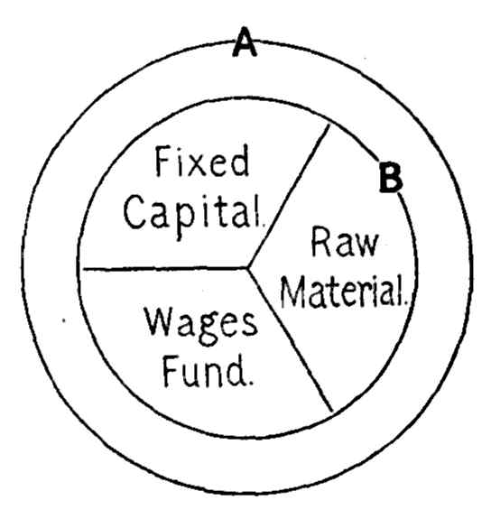

Chapter 12: Of Wages¶
12.1 § 1. Of Competition and Custom¶
Political economists generally, and English political economists above others, have been accustomed to lay almost exclusive stress upon the first of [two] agencies [competition and custom]; to exaggerate the effect of competition, and to take into little account the other and conflicting principle. They are apt to express themselves as if they thought that competition actually does, in all cases, whatever it can be shown to be the tendency of competition to do. This is partly intelligible, if we consider that only through the principle of competition has political economy any pretension to the character of a science. So far as rents, profits, wages, prices, are determined by competition, laws may be assigned for them. Assume competition to be their exclusive regulator, and principles of broad generality and scientific precision may be laid down, according to which they will be regulated. The political economist justly deems this his proper business: and, as an abstract or hypothetical science, political economy can not be required to do, and indeed can not do, anything more. But it would be a great misconception of the actual course of human affairs to suppose that competition exercises in fact this unlimited sway. I am not speaking of monopolies, either natural or artificial, or of any interferences of authority with the liberty of production or exchange. Such disturbing causes have always been allowed for by political economists. I speak of cases in which there is nothing to restrain competition; no hindrance to it either in the nature of the case or in artificial obstacles; yet in which the result is not determined by competition, but by custom or usage; competition either not taking place at all, or producing its effect in quite a different manner from that which is ordinarily assumed to be natural to it.
As stated by Mr. Cairnes,1 political economy is a science just as is any recognized physical science—astronomy, chemistry, physiology. The economic “facts we find existing are the results of causes, between which and them the connection is constant and invariable. It is, then, the constant relations exhibited in economic phenomena that we have in view when we speak of the laws of the phenomena of wealth; and in the exposition of these laws consists the science of political economy.” It is to be remembered that economic laws are tendencies, not actual descriptions of any given conditions in this or that place.
Competition, in fact, has only become in any considerable degree the governing principle of contracts, at a comparatively modern period. The further we look back into history, the more we see all transactions and engagements under the influence of fixed customs. The relations, more especially between the land-owner and the cultivator, and the payments made by the latter to the former, are, in all states of society but the most modern, determined by the usage of the country. The custom of the country is the universal rule; nobody thinks of raising or lowering rents, or of letting land, on other than the customary conditions. Competition, as a regulator of rent, has no existence.
Prices, whenever there was no monopoly, came earlier under the influence of competition, and are much more universally subject to it, than rents. The wholesale trade, in the great articles of commerce, is really under the dominion of competition. But retail price, the price paid by the actual consumer, seems to feel very slowly and imperfectly the effect of competition; and, when competition does exist, it often, instead of lowering prices, merely divides the gains of the high price among a greater number of dealers. The influence of competition is making itself felt more and more through the principal branches of retail trade in the large towns.
All professional remuneration is regulated by custom. The fees of physicians, surgeons, and barristers, the charges of attorneys, are nearly invariable. Not certainly for want of abundant competition in those professions, but because the competition operates by diminishing each competitor's chance of fees, not by lowering the fees themselves.
These observations must be received as a general correction to be applied whenever relevant, whether expressly mentioned or not, to the conclusions contained in the subsequent portions of this treatise. Our reasonings must, in general, proceed as if the known and natural effects of competition were actually produced by it, in all cases in which it is not restrained by some positive obstacle. Where competition, though free to exist, does not exist, or where it exists, but has its natural consequences overruled by any other agency, the conclusions will fail more or less of being applicable. To escape error, we ought, in applying the conclusions of political economy to the actual affairs of life, to consider not only what will happen supposing the maximum of competition, but how far the result will be affected if competition falls short of the maximum.
12.2 § 2. The Wages-fund, and the Objections to it Considered¶
Under the head of Wages are to be considered, first, the causes which determine or influence the wages of labor generally, and secondly, the differences that exist between the wages of different employments. It is convenient to keep these two classes of considerations separate; and in discussing the law of wages, to proceed in the first instance as if there were no other kind of labor than common unskilled labor, of the average degree of hardness and disagreeableness.
Competition, however, must be regarded, in the present state of society, as the principal regulator of wages, and custom or individual character only as a modifying circumstance, and that in a comparatively slight degree.
Wages, then, depend mainly upon the demand and supply of labor; or, as it is often expressed, on the proportion between population and capital. By population is here meant the number only of the laboring-class, or rather of those who work for hire; and by capital, only circulating capital, and not even the whole of that, but the part which is expended in the direct purchase of labor. To this, however, must be added all funds which, without forming a part of capital, are paid in exchange for labor, such as the wages of soldiers, domestic servants, and all other unproductive laborers. There is unfortunately no mode of expressing, by one familiar term, the aggregate of what may be called the wages-fund of a country: and, as the wages of productive labor form nearly the whole of that fund, it is usual to overlook the smaller and less important part, and to say that wages depend on population and capital. It will be convenient to employ this expression, remembering, however, to consider it as elliptical, and not as a literal statement of the entire truth.
With these limitations of the terms, wages not only depend upon the relative amount of capital and population, but can not, under the rule of competition, be affected by anything else. Wages (meaning, of course, the general rate) can not rise, but by an increase of the aggregate funds employed in hiring laborers, or a diminution in the number of the competitors for hire; nor fall, except either by a diminution of the funds devoted to paying labor, or by an increase in the number of laborers to be paid.

This is the simple statement of the well-known Wages-Fund Theory, which has given rise to no little animated discussion. Few economists now assent to this doctrine when stated as above, and without changes. The first attack on this explanation of the rate of wages came from what is now a very scarce pamphlet, written by F. D. Longe, entitled “A Refutation of the Wage-Fund Theory of Modern Political Economy” (1866). Because laborers do not really compete with each other, he regarded the idea of average wages as absurd as the idea of an average price of ships and cloth; he declared that there was no predetermined wages-fund necessarily expended on labor; and that “demand for commodities” determined the amount of wealth devoted to paying wages (p. 46). While the so-called wages-fund limits the total amount which the laborers can receive, the employer would try to get his workmen at as much less than that amount as possible, so that the aggregate fund would have no bearing on the actual amount paid in wages. The quantity of work to be done, he asserts, determines the quantity of labor to be employed. About the same time (but unknown to Mr. Longe), W. T. Thornton was studying the same subject, and attracted considerable attention by his publication, “On Labor” (1868), which in Book II, Chap. I, contained an extended argument to show that demand and supply (i.e., the proportion between wages-fund and laborers) did not regulate wages, and denied the existence of a predetermined wages-fund fixed in amount. His attack, however, assumes a very different conception of an economic law from that which we think right to insist upon. The character of mankind being what it is, it will be for their interest to invest so much and no more in labor, and we must believe that in this sense there is a predetermination of wealth to be paid in wages. In order to make good investments, a certain amount must, if capitalists follow their best interests, go to the payment of labor.2 Mr. Thornton's argument attracted the more attention because Mr. Mill3 admitted that Mr. Thornton had induced him to abandon his Wages-Fund Theory. The subject was, however, taken up, re-examined by Mr. Cairnes,4 and stated in a truer form. (1.) The total wealth of a country (circle A in the diagram) is the outside limit of its capital. How much capital will be saved out of this depends upon the effective desire of accumulation in the community (as set forth in Book I, Chap. VIII). The size of circle B within circle A, therefore, depends on the character of the people. The wages-fund, then, depends ultimately on the extent of A, and proximately on the extent of B. It can never be larger than B. So far, at least, its amount is “predetermined” in the economic sense by general laws regarding the accumulation of capital and the expectation of profit. Circle B contracts and expands under influences which have nothing to do with the immediate bargains between capitalists and laborers. (2.) Another influence now comes in to affect the amount of capital actually paid as wages, one also governed by general causes outside the reach of laborer or capitalist, that is, the state of the arts of production. In production, the particular conditions of each industry will determine how much capital is to be set apart for raw material, how much for machinery, buildings, and all forms of fixed capital, and how many laborers will be assigned to a given machine for a given amount of material. With some kinds of hand-made goods the largest share of capital goes to wages, a less amount for materials, and a very small proportion for machinery and tools. In many branches of agriculture and small farming this holds true. The converse, however, is true in many manufactures, where machinery is largely used. No two industries will maintain the same proportion between the three elements. The nature of the industry, therefore, will determine whether a greater or a less share of capital will be spent in wages. It is needless to say that this condition of things is not one to be changed at the demand of either of the two parties to production, Labor and Capital; it responds only to the advance of mechanical science or general intelligence. It is impossible, then, to escape the conclusion that general causes restrict the amount which will, under any normal investment, go to the payment of wages. Only within the limits set by these forces can any further expansion or contraction take place. (3.) Within these limits, of course, minor changes may take place, so that the fund can not be said to be “fixed” or “absolutely predetermined”; but these changes must take place within such narrow limits that they do not much affect the practical side of the question. How these changes act, may be seen in a part of the following illustration of the above principles:
Suppose a cotton-mill established in one of the valleys of Vermont, for the management of which the owner has $140,000 of capital. Of this, $100,000 is given for buildings, machinery, and plant. If he turns over his remaining capital ($40,000) each month, we will suppose that $28,000 spent in raw materials will keep five hundred men occupied at a monthly expenditure of $12,000. The present state of cotton-manufacture itself settles the relation between a given quantity of raw cotton and a certain amount of machinery. A fixed amount of cotton, no more, no less, can be spun by each spindle and woven by each loom; and the nature of the process determines the number of laborers to each machine. This proportion is something which an owner must obey, if he expects to compete with other manufacturers: the relationship is fixed for, not by, him. Now, each of the five hundred laborers being supposed to receive on an average $1.00 a day, imagine an influx of a body of French Canadians who offer to work, on an average, for eighty cents a day.5 The five hundred men will now receive but $9,600 monthly instead of $12,000, as before, as a wages-fund; the monthly payment for wages now is nearly seven per cent, while formerly it was nearly nine per cent of the total capital invested ($140,000). Thus it will be seen that the wages-fund can change with a change in the supply of labor: but the point to be noticed is that it is a change in the subdivision, $12,000, of the total $140,000. That is, this alteration can take place only within the limits set by the nature of the industry. Now, if this $2,400 (i.e., $12,000 less $9,600) saved out of the wages-fund were to be reinvested, it must necessarily be divided between raw materials, fixed capital, and wages in the existing relations, that is, only seven per cent of the new $2,400 would be added to the wages-fund. It is worth while calling attention to this, if for no other reason than to show that in this way a change can be readily made in the wages-fund by natural movements; and that no one can be so absurd as to say that it is absolutely fixed in amount. But it certainly is “predetermined” in the economic sense, in that any reinvestments, as well as former funds, must necessarily be distributed according to the above general principles, independent of the “higgling” in the labor market. The following is Mr. Cairnes's statement of the amount and “predetermination” of the wages-fund:
“I believe that, in the existing state of the national wealth, the character of Englishmen being what it is, a certain prospect of profit will ‘determine’ a certain proportion of this wealth to productive investment; that the amount thus ‘determined’ will increase as the field for investment is extended, and that it will not increase beyond what this field can find employment for at that rate of profit which satisfies English commercial expectation. Further, I believe that, investment thus taking place, the form which it shall assume will be ‘determined’ by the nature of the national industries—‘determined,’ not under acts of Parliament, or in virtue of any physical law, but through the influence of the investor's interests; while this, the form of the investment, will again ‘determine’ the proportion of the whole capital which shall be paid as wages to laborers.”6 In this excellent and masterly conception, the doctrine of a wages-fund is not open to the objections usually urged against it. Indeed, with the exception of Professor Fawcett, scarcely any economist believes in an absolutely fixed wages-fund. In this sense, then, and in view of the above explanation, it will be understood what is meant by saying that wages depend upon the proportion of the wages-fund to the number of the wage-receivers.7
In applying these principles to the question of strikes, it is evident enough that if they result in an actual expansion of the whole circle B, by forcing saving from unproductive expenditure, a real addition, of some extent, may be made to the wages-fund; but only by increasing the total capital. If, however, they attempt to increase one of the elements of capital, the wages-fund, without also adding to the other elements, fixed capital and materials, in the proportion fixed by the nature of the industry, they will destroy all possibility of continuing that production in the normal way, and the capitalist must withdraw from the enterprise.
Francis A. Walker8 has also offered a solution of this problem in his “Wages Question” (1876), in which he holds that “wages are, in a philosophical view of the subject, paid out of the product of present industry, and hence that production furnishes the true measure of wages” (p. 128). “It is the prospect of a profit in production which determines the employer to hire laborers; it is the anticipated value of the product which determines how much he can pay him” (p. 144). No doubt wages can be (and often are) paid out of the current product; but what amount? What is the principle of distribution? Wherever the incoming product is a moral certainty (and, unless this is true, in no case could wages be paid out of the future product), saving is as effective upon it as upon the actual accumulations of the past; and the amount of the coming product which will be saved and used as capital is determined by the same principles which govern the saving of past products. An increase of circle A by a larger production makes possible an increase of circle B, but whether it will be enlarged or not depends on the principle of accumulation. The larger the total production of wealth, the greater the possible wages, all must admit; but it does not seem clear that General Walker has given us a solution of the real question at issue. The larger the house you build, the larger the rooms may be; but it does not follow that the rooms will be necessarily large—as any inmate of a summer hotel will testify.
12.3 § 3. Examination of some popular Opinions respecting Wages¶
There are, however, some facts in apparent contradiction to this [the Wages-Fund] doctrine, which it is incumbent on us to consider and explain.
1. For instance, it is a common saying that wages are high when trade is good. The demand for labor in any particular employment is more pressing, and higher wages are paid, when there is a brisk demand for the commodity produced; and the contrary when there is what is called a stagnation: then work-people are dismissed, and those who are retained must submit to a reduction of wages; though in these cases there is neither more nor less capital than before. This is true; and is one of those complications in the concrete phenomena which obscure and disguise the operation of general causes; but it is not really inconsistent with the principles laid down. Capital which the owner does not employ in purchasing labor, but keeps idle in his hands, is the same thing to the laborers, for the time being, as if it did not exist. All capital is, from the variations of trade, occasionally in this state. A manufacturer, finding a slack demand for his commodity, forbears to employ laborers in increasing a stock which he finds it difficult to dispose of; or if he goes on until all his capital is locked up in unsold goods, then at least he must of necessity pause until he can get paid for some of them. But no one expects either of these states to be permanent; if he did, he would at the first opportunity remove his capital to some other occupation, in which it would still continue to employ labor. The capital remains unemployed for a time, during which the labor market is overstocked, and wages fall. Afterward the demand revives, and perhaps becomes unusually brisk, enabling the manufacturer to sell his commodity even faster than he can produce it; his whole capital is then brought into complete efficiency, and, if he is able, he borrows capital in addition, which would otherwise have gone into some other employment. These, however, are but temporary fluctuations: the capital now lying idle will next year be in active employment, that which is this year unable to keep up with the demand will in its turn be locked up in crowded warehouses; and wages in these several departments will ebb and flow accordingly: but nothing can permanently alter general wages, except an increase or a diminution of capital itself (always meaning by the term, the funds of all sorts, destined for the payment of labor) compared with the quantity of labor offering itself to be hired.
2. Again, it is another common notion that high prices make high wages; because the producers and dealers, being better off, can afford to pay more to their laborers. I have already said that a brisk demand, which causes temporary high prices, causes also temporary high wages. But high prices, in themselves, can only raise wages if the dealers, receiving more, are induced to save more, and make an addition to their capital, or at least to their purchases of labor. Wages will probably be temporarily higher in the employment in which prices have risen, and somewhat lower in other employments: in which case, while the first half of the phenomenon excites notice, the other is generally overlooked, or, if observed, is not ascribed to the cause which really produced it. Nor will the partial rise of wages last long: for, though the dealers in that one employment gain more, it does not follow that there is room to employ a greater amount of savings in their own business: their increasing capital will probably flow over into other employments, and there counterbalance the diminution previously made in the demand for labor by the diminished savings of other classes.
A clear distinction must be made between real wages and money wages; the former is of importance to the laborer as being his real receipts. The quantity of commodities satisfying his desires which the laborer receives for his exertion constitutes his real wages. The mere amount of money he receives for his exertions, irrespective of what the money will exchange for, forms his money wages. Since the functions of money have not yet been explained, it is difficult to discuss the relation between prices and money wages here. But, as the total value of the products in a certain industry is the sum out of which both money wages and profits are paid, this total will rise or fall (efficiency of labor remaining the same) with the price of the particular article. If the price rises, profits will be greater than elsewhere, and more capital will be invested in that one business; that is, the capital will be a demand for more labor, and, until equalization is accomplished in all trades between wages and profits, money wages will be higher in some trades than in others.9
When reference is had to the connection between real wages and prices, the question is a different one. General high prices would not change general real wages. But if high prices cause higher money wages in particular branches of trade, then, because the movement is not general, there will accrue, to those receiving more money, the means to buy more of real wages. And, as in practice, changes in prices which arise from an increased demand are partial, and not general, it often happens that high prices produce high real wages (not general high wages) in some, not in all employments. (For a further study of this relation between prices and wages the reader is advised to recall this discussion in connection with that in a later part of the volume, Book III, Chaps. XX and XXI.)
3. Another opinion often maintained is, that wages (meaning of course money wages) vary with the price of food; rising when it rises, and falling when it falls. This opinion is, I conceive, only partially true; and, in so far as true, in no way affects the dependence of wages on the proportion between capital and labor: since the price of food, when it affects wages at all, affects them through that law. Dear or cheap food caused by variety of seasons does not affect wages (unless they are artificially adjusted to it by law or charity): or rather, it has some tendency to affect them in the contrary way to that supposed; since in times of scarcity people generally compete more violently for employment, and lower the labor market against themselves. But dearness or cheapness of food, when of a permanent character, and capable of being calculated on beforehand, may affect wages. (1.) In the first place, if the laborers have, as is often the case, no more than enough to keep them in working condition and enable them barely to support the ordinary number of children, it follows that, if food grows permanently dearer without a rise of wages, a greater number of the children will prematurely die; and thus wages will ultimately be higher, but only because the number of people will be smaller, than if food had remained cheap. (2.) But, secondly, even though wages were high enough to admit of food's becoming more costly without depriving the laborers and their families of necessaries; though they could bear, physically speaking, to be worse off, perhaps they would not consent to be so. They might have habits of comfort which were to them as necessaries, and sooner than forego which, they would put an additional restraint on their power of multiplication; so that wages would rise, not by increase of deaths but by diminution of births. In these cases, then, wages do adapt themselves to the price of food, though after an interval of almost a generation.10 If wages were previously so high that they could bear reduction, to which the obstacle was a high standard of comfort habitual among the laborers, a rise of the price of food, or any other disadvantageous change in their circumstances, may operate in two ways: (a) it may correct itself by a rise of wages, brought about through a gradual effect on the prudential check to population; or (b) it may permanently lower the standard of living of the class, in case their previous habits in respect of population prove stronger than their previous habits in respect of comfort. In that case the injury done to them will be permanent, and their deteriorated condition will become a new minimum, tending to perpetuate itself as the more ample minimum did before. It is to be feared that, of the two modes in which the cause may operate, the last (b) is the most frequent, or at all events sufficiently so to render all propositions, ascribing a self-repairing quality to the calamities which befall the laboring-classes, practically of no validity.
The converse case occurs when, by improvements in agriculture, the repeal of corn laws, or other such causes, the necessaries of the laborers are cheapened, and they are enabled with the same [money] wages to command greater comforts than before. Wages will not fall immediately: it is even possible that they may rise; but they will fall at last, so as to leave the laborers no better off than before, unless during this interval of prosperity the standard of comfort regarded as indispensable by the class is permanently raised. Unfortunately this salutary effect is by no means to be counted upon: it is a much more difficult thing to raise, than to lower, the scale of living which the laborers will consider as more indispensable than marrying and having a family. According to all experience, a great increase invariably takes place in the number of marriages in seasons of cheap food and full employment.
This is to be seen by some brief statistics of marriages in Vermont and Massachusetts.
| Year. | Vermont | Massachusetts |
|---|---|---|
| 1860 | 2,179 | 12,404 |
| 1861 | 2,188 | 10,972 |
| 1862 | 1,962 | 11,014 |
| 1863 | 2,007 | 10,873 |
| 1864 | 1,804 | 12,513 |
| 1865 | 2,569 | 13,052 |
| 1866 | 3,001 | 14,428 |
| 1867 | 2,857 | 14,451 |
In Vermont, while the average number of marriages was reached in 1860 and 1861, it fell off on the breaking out of the war; rose in 1863, under the fair progress of the Northern arms; again fell off in 1864, during the period of discouragement; and since 1865 has kept a steadily higher average. In manufacturing Massachusetts the number fell earlier than in agricultural Vermont, at the beginning of the difficulties.
| 1856, July to Jan. | 6,418 |
|---|---|
| 1857, Jan. to July | 5,803 |
| 1857, July to Jan. | 5,936 |
| 1858, Jan. to July | 4,917 |
| 1858, July to Jan. | 5,610 |
The effects of the financial panic of 1857, in Massachusetts, show a similar movement in the number of marriages. The crisis came in October, 1857. In the three months following that date there were 400 less marriages.
To produce permanent advantage, the temporary cause operating upon them must be sufficient to make a great change in their condition—a change such as will be felt for many years, notwithstanding any stimulus which it may give during one generation to the increase of people. When, indeed, the improvement is of this signal character, and a generation grows up which has always been used to an improved scale of comfort, the habits of this new generation in respect to population become formed upon a higher minimum, and the improvement in their condition becomes permanent.
12.4 § 4. Certain rare Circumstances excepted, High Wages imply Restraints on Population¶
Wages depend, then, on the proportion between the number of the laboring population and the capital or other funds devoted to the purchase of labor; we will say, for shortness, the capital. If wages are higher at one time or place than at another, if the subsistence and comfort of the class of hired laborers are more ample, it is for no other reason than because capital bears a greater proportion to population. It is not the absolute amount of accumulation or of production that is of importance to the laboring-class; it is not the amount even of the funds destined for distribution among the laborers; it is the proportion between those funds and the numbers among whom they are shared. The condition of the class can be bettered in no other way than by altering that proportion to their advantage: and every scheme for their benefit which does not proceed on this as its foundation is, for all permanent purposes, a delusion.
In countries like North America and the Australian colonies, where the knowledge and arts of civilized life and a high effective desire of accumulation coexist with a boundless extent of unoccupied land, the growth of capital easily keeps pace with the utmost possible increase of population, and is chiefly retarded by the impracticability of obtaining laborers enough. All, therefore, who can possibly be born can find employment without overstocking the market: every laboring family enjoys in abundance the necessaries, many of the comforts, and some of the luxuries of life; and, unless in case of individual misconduct, or actual inability to work, poverty does not, and dependence need not, exist. [In England] so gigantic has been the progress of the cotton manufacture since the inventions of Watt and Arkwright, that the capital engaged in it has probably quadrupled in the time which population requires for doubling. While, therefore, it has attracted from other employments nearly all the hands which geographical circumstances and the habits or inclinations of the people rendered available; and while the demand it created for infant labor has enlisted the immediate pecuniary interest of the operatives in favor of promoting, instead of restraining, the increase of population; nevertheless wages in the great seats of the manufacture are still so high that the collective earnings of a family amount, on an average of years, to a very satisfactory sum; and there is as yet no sign of decrease, while the effect has also been felt in raising the general standard of agricultural wages in the counties adjoining.
But those circumstances of a country, or of an occupation, in which population can with impunity increase at its utmost rate, are rare and transitory. Very few are the countries presenting the needful union of conditions. Either the industrial arts are backward and stationary, and capital therefore increases slowly, or, the effective desire of accumulation being low, the increase soon reaches its limit; or, even though both these elements are at their highest known degree, the increase of capital is checked, because there is not fresh land to be resorted to of as good quality as that already occupied. Though capital should for a time double itself simultaneously with population, if all this capital and population are to find employment on the same land, they can not, without an unexampled succession of agricultural inventions, continue doubling the produce; therefore, if wages do not fall, profits must; and, when profits fall, increase of capital is slackened.
Except, therefore, in the very peculiar cases which I have just noticed, of which the only one of any practical importance is that of a new colony, or a country in circumstances equivalent to it, it is impossible that population should increase at its utmost rate without lowering wages. In no old country does population increase at anything like its utmost rate; in most, at a very moderate rate: in some countries, not at all. These facts are only to be accounted for in two ways. Either the whole number of births which nature admits of, and which happen in some circumstances, do not take place; or, if they do, a large proportion of those who are born, die. The retardation of increase results either from mortality or prudence; from Mr. Malthus's positive, or from his preventive check: and one or the other of these must and does exist, and very powerfully too, in all old societies. Wherever population is not kept down by the prudence either of individuals or of the state, it is kept down by starvation or disease.
12.5 § 5. Due Restriction of Population the only Safeguard of a Laboring-Class¶
Where a laboring-class who have no property but their daily wages, and no hope of acquiring it, refrain from over-rapid multiplication, the cause, I believe, has always hitherto been, either actual legal restraint, or a custom of some sort which, without intention on their part, insensibly molds their conduct, or affords immediate inducements not to marry. It is not generally known in how many countries of Europe direct legal obstacles are opposed to improvident marriages.
Where there is no general law restrictive of marriage, there are often customs equivalent to it. When the guilds or trade corporations of the middle ages were in vigor, their by-laws or regulations were conceived with a very vigilant eye to the advantage which the trade derived from limiting competition; and they made it very effectually the interest of artisans not to marry until after passing through the two stages of apprentice and journeyman, and attaining the rank of master.
Unhappily, sentimentality rather than common sense usually presides over the discussions of these subjects. Discussions on the condition of the laborers, lamentations over its wretchedness, denunciations of all who are supposed to be indifferent to it, projects of one kind or another for improving it, were in no country and in no time of the world so rife as in the present generation; but there is a tacit agreement to ignore totally the law of wages, or to dismiss it in a parenthesis, with such terms as “hard-hearted Malthusianism”; as if it were not a thousand times more hard-hearted to tell human beings that they may, than that they may not, call into existence swarms of creatures who are sure to be miserable, and most likely to be depraved!
I ask, then, is it true or not, that if their numbers were fewer they would obtain higher wages? This is the question, and no other: and it is idle to divert attention from it, by attacking any incidental position of Malthus or some other writer, and pretending that to refute that is to disprove the principle of population. Some, for instance, have achieved an easy victory over a passing remark of Mr. Malthus, hazarded chiefly by way of illustration, that the increase of food may perhaps be assumed to take place in an arithmetical ratio, while population increases in a geometrical: when every candid reader knows that Mr. Malthus laid no stress on this unlucky attempt to give numerical precision to things which do not admit of it, and every person capable of reasoning must see that it is wholly superfluous to his argument. Others have attached immense importance to a correction which more recent political economists have made in the mere language of the earlier followers of Mr. Malthus. Several writers had said that it is the tendency of population to increase faster than the means of subsistence. The assertion was true in the sense in which they meant it, namely, that population would in most circumstances increase faster than the means of subsistence, if it were not checked either by mortality or by prudence. But inasmuch as these checks act with unequal force at different times and places, it was possible to interpret the language of these writers as if they had meant that population is usually gaining ground upon subsistence, and the poverty of the people becoming greater. Under this interpretation of their meaning, it was urged that the reverse is the truth: that as civilization advances, the prudential check tends to become stronger, and population to slacken its rate of increase, relatively to subsistence; and that it is an error to maintain that population, in any improving community, tends to increase faster than, or even so fast as, subsistence.11 The word tendency12 is here used in a totally different sense from that of the writers who affirmed the proposition; but waiving the verbal question, is it not allowed, on both sides, that in old countries population presses too closely upon the means of subsistence?
-
“Logical Method,” pp. 34, 36. ↩
-
Cf. Cairnes, “Leading Principles,” pp. 180-188. ↩
-
In the “Fortnightly Review,” May 1, 1869. ↩
-
“Leading Principles,” pp. 149-189. ↩
-
Counting six days to a week and four weeks to a month. ↩
-
“Leading Principles,” p. 185. ↩
-
Mr. Thornton replied to Mr. Cairnes (“Nineteenth Century,” August, 1879). A succinct statement of the condition of the wages-fund controversy has been made by Henry Sidgwick, “Fortnightly Review,” September 1, 1879. See also W. G. Sumner, “Princeton Review,” “Wages,” November, 1882. ↩
-
He advanced the same view in the “North American Review,” vol. cxx, January, 1875. In his “Political Economy” (1883) he advances a more extensive theory of distribution. See “Atlantic Monthly,” July, 1883, p. 129. ↩
-
See Cairnes, “Leading Principles,” p. 209. ↩
-
This proposition needs to be kept in mind for the future discussion of the cost of production of food and its relation to cost of labor. Book II, Chap. V, § 5. ↩
-
Mr. Carey takes this ground. ↩
-
See the explanation of an economic law, Book II, Chap. II, § 1. ↩